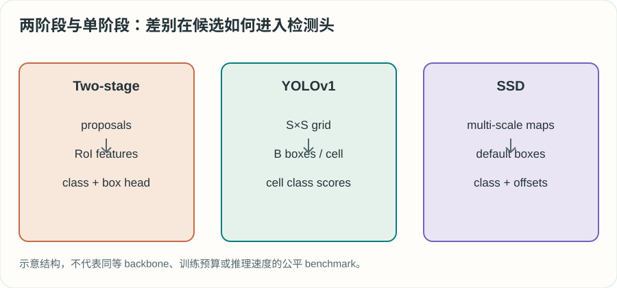
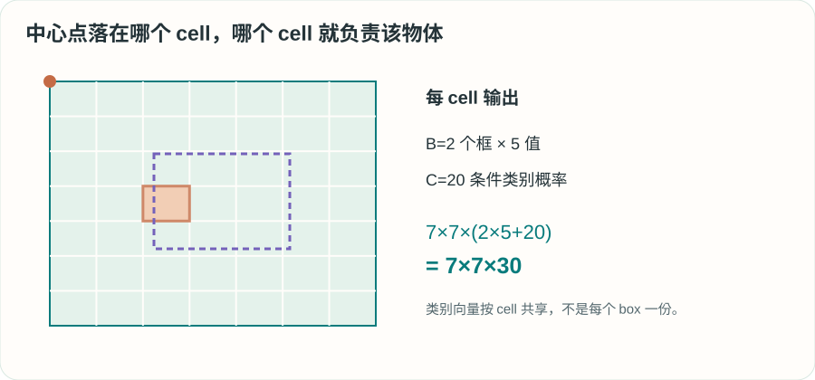
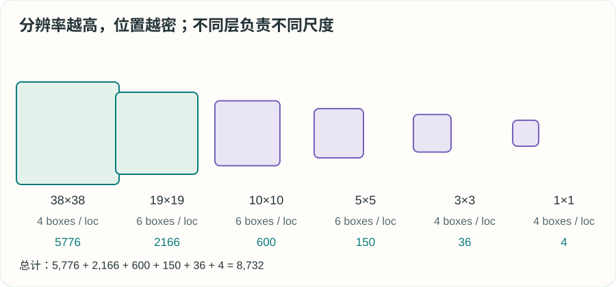

CHAPTER 19 · 目标检测
YOLO 与 SSD：单阶段检测如何密集预测
YOLOv1 用网格一次预测整图中的框与类别；SSD 把 default boxes 分布在多尺度特征图上。理解输出张量、匹配规则和背景样本处理，才能比较两种单阶段检测器。
单阶段检测：把 proposal 与分类定位合并成一次密集预测
两阶段检测器先生成候选区域，再对每个区域分类和回归。单阶段检测器则直接在一个或多个特征图位置上预测类别分数和框偏移，不需要独立的 proposal + RoI 特征重采样阶段。YOLO 与 SSD 都属于这一思路，但它们组织预测位置的方式并不相同。
YOLOv1 把图像划分为规则网格，由负责物体中心的网格单元预测框与类别；SSD 在多个分辨率的 feature maps 上放置 default boxes，让细分辨率层更容易检测小物体、粗分辨率层覆盖大物体。两者都需要把 ground truth 匹配到某些输出位置，并处理大量背景预测造成的类别不平衡。

YOLOv1：一个网格单元预测什么？
原始 YOLOv1 把输入图像划分为 (S×S) 网格。物体中心落在哪个 cell，该 cell 就负责检测该物体。每个 cell 预测 (B) 个边界框，每个框包含 (x,y,w,h) 与 confidence；此外，每个 cell 预测一组 (C) 个条件类别概率 (Pr(Class_i | Object))。注意：类别概率是每个 cell 一组，不是每个框一组。

输出张量维度：每个 cell 包含 B×5 个框参数与 C 个条件类别概率。
VOC 设置中 (S=7,B=2,C=20)，所以输出为 (7×7×30)。每个框的 confidence 定义为 (Pr(Object)×IoU_{pred}^{truth})。推理时把它乘以该 cell 的条件类别概率，就得到每个框对某一类别的 class-specific score。
YOLOv1 confidence 已经包含 objectness 与定位 IoU 因子；类别分数再乘条件类别概率。
YOLOv1 原始网络使用 448×448 输入、24 个卷积层与 2 个全连接层，最终产生上述张量；不要把这个结构直接描述成今天的 anchor-based YOLO 系列。
YOLOv1 的责任框、平方误差与尺度权重
每个 cell 虽然预测两个框，但训练时只有与 ground truth IoU 最大的预测器负责该物体的坐标回归与 objectness 监督。这个责任分配让不同 box predictors 逐渐专门化。坐标损失使用平方误差，宽高比较平方根值，以减轻大框与小框相同像素误差带来的尺度不公平；无物体框的 confidence loss 被较小权重压低。
原始 YOLOv1 使用 (lambda_{coord}=5)、(lambda_{noobj}=0.5)。损失包括负责框的中心与宽高回归、负责框的 confidence、非负责框/无物体 cell 的 confidence，以及有物体 cell 的条件类别概率误差。它是一个可优化的代理目标，并不等价于直接最大化 AP。
SSD：多尺度特征图上的 Default Boxes
SSD（Single Shot MultiBox Detector）不使用 YOLOv1 的单一 7×7 网格。它从 backbone 与额外卷积层中取多个分辨率的 feature maps，在每个 cell 上放置不同尺度与宽高比的 default boxes。每个 default box 同时预测 (C) 类置信度和 4 个相对位置偏移。低层特征图分辨率高，保留更多局部细节；高层特征图分辨率低、语义更强，更适合覆盖较大物体。

原始 SSD300 的预测层是 conv4_3、conv7、conv8_2、conv9_2、conv10_2 与 conv11_2。对应空间尺寸为 38、19、10、5、3、1；每个位置分别使用 4、6、6、6、4、4 个 default boxes，总计 8732。SSD512 等不同输入版本会有不同特征图与总框数。
SSD300 的 default-box 数量。这里使用原论文的六层预测 feature map 和每位置框数。
SSD 的匹配、定位损失与 Hard Negative Mining
SSD 训练时先将每个 ground-truth box 匹配到 IoU 最大的 default box，再把与任意 ground truth IoU 大于 0.5 的 default boxes 也标记为正样本。其余作为负样本。正样本的定位项用 Smooth L1 回归中心偏移与宽高对数比例；分类项使用 softmax confidence loss。
密集 default boxes 中绝大多数是背景，若把所有负样本都纳入训练，会让梯度被容易的背景样本主导。SSD 使用 hard negative mining：按负样本的 confidence loss 排序，保留最难的负样本，使负:正比例最多约 3:1。这个策略与 RPN 的 anchor mini-batch 采样不同，不能互相替代为同一套阈值。
SSD 的目标函数是 localization loss 与 confidence loss 的加权和，再按匹配到的正样本数 (N) 归一化；若 (N=0)，原论文实现将 loss 设为 0。default box 形状、不同层尺度与数据增强都影响最终匹配分布。
可运行实验：YOLOv1 输出维度与 SSD300 框数量
第一个实验检查 YOLOv1 在 VOC 类别配置下的输出布局，并展示类别条件概率如何乘上每个框的 confidence。第二个实验只根据原论文六个预测层的空间尺寸和每位置 default box 数计算总数，不创建任何图像或训练网络。
import torch
S, B, C = 7, 2, 20
prediction = torch.zeros(1, S, S, B*5 + C)
class_prob = prediction[..., :C]
box_fields = prediction[..., C:].reshape(1, S, S, B, 5)
confidence = box_fields[..., 4]
class_prob[0, 3, 2, 5] = 0.6
confidence[0, 3, 2, 0] = 0.8
class_scores = class_prob.unsqueeze(-2) * confidence.unsqueeze(-1)
assert tuple(prediction.shape) == (1,7,7,30)
assert tuple(class_scores.shape) == (1,7,7,2,20)
assert abs(class_scores[0,3,2,0,5].item() - 0.48) < 1e-6
print("YOLOv1 output:", tuple(prediction.shape))feature_sizes = [38, 19, 10, 5, 3, 1]
boxes_per_location = [4, 6, 6, 6, 4, 4]
counts = [s*s*k for s,k in zip(feature_sizes, boxes_per_location)]
total = sum(counts)
assert counts == [5776,2166,600,150,36,4]
assert total == 8732
print("SSD300 boxes by level:", counts, "total:", total)两种单阶段设计的差异与适用边界
YOLOv1 的输出由网格位置、每 cell 的框数与类别数共同决定；SSD 的输出由多尺度 feature maps 与每位置 default-box 数决定。YOLOv1 把每个 cell 的类别概率与框 confidence 解耦；SSD 则为每个 default box 预测类别置信度。SSD 用多层特征图改善尺度覆盖，YOLOv1 用全图上下文和简单的一次前向形成统一检测器。
| 维度 | YOLOv1 | SSD300 |
|---|---|---|
| 预测位置 | 单一 S×S 网格 | 多个尺度 feature maps |
| 参考形式 | 网格 cell + 直接框回归 | 预设 default boxes |
| 类别输出 | 每 cell 一组条件类别概率 | 每个 default box 一组类别 confidence |
| 训练匹配 | 中心落点与责任预测器 | 最佳 IoU + IoU 阈值匹配 |
| 背景处理 | 降低 no-object confidence 权重 | hard negative mining，负:正最多约 3:1 |
单阶段并不意味着完全没有后处理；YOLOv1 和 SSD 都会使用置信度阈值与 NMS 等步骤。DETR 则通过 set prediction 和二分匹配减少经典重复框后处理，属于另一种端到端检测范式，不应把它等同于 YOLOv1 或 SSD 的 anchor/grid 输出结构。
理解检查：YOLOv1 与 SSD 的输出都能叫作“每个 anchor 的类别概率”吗？
不能。YOLOv1 的类别条件概率是每个 grid cell 一组，再与每个 box confidence 相乘；SSD 是每个 default box 直接预测类别 confidence。
原始论文与技术文档
YOLOv1、SSD300 的历史配置与现代同名系列模型不能混为一谈；本文所有张量尺寸和 anchor 数量都明确对应原始版本。